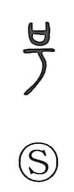

号

Uncategorized
Kun: sakebu, naku | On: gou
number ・ designation ・ to cry out ・ to weep ・ to roar
Explanation
This is a picto-phonetic graph whose original form was written 號, with 号 as its core. In that core, a mouth (口) is set above a ritual container (the covenant receptacle in which written prayers were placed), and beneath it a branch-shaped element—the same idea later seen in 可—depicts the twig used to strike the vessel. In rites one would beat the receptacle with the branch while crying out, wailing, and pressing one’s plea to the gods; from this practice 号 took on the sense of crying and weeping. When the tiger component 虎 was added, the force of that cry was likened to a tiger’s roar, yielding 號 and supporting the on reading gō.